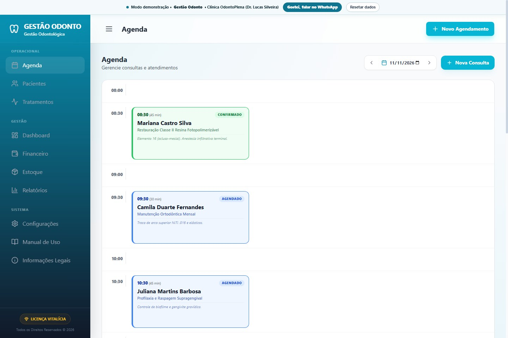

Agenda clínica
O tempo de cada procedimento,
O tempo de cada procedimento,
organizado na agenda.
Organize horários por duração de restaurações, profilaxias, cirurgias e manutenções ortodônticas, conforme a disponibilidade do consultório.
- Duração personalizada por procedimento
- Status visual: confirmado, agendado ou concluído
- Controle de retornos preventivos semestrais